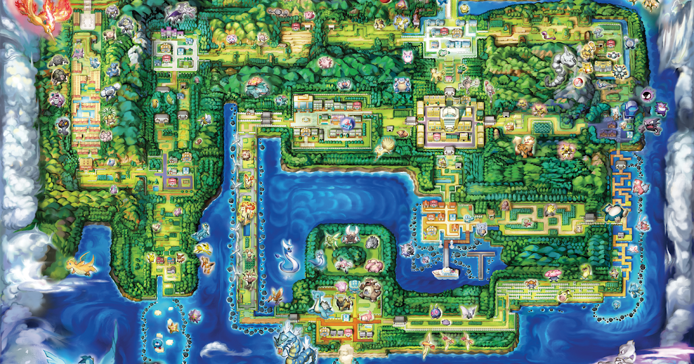
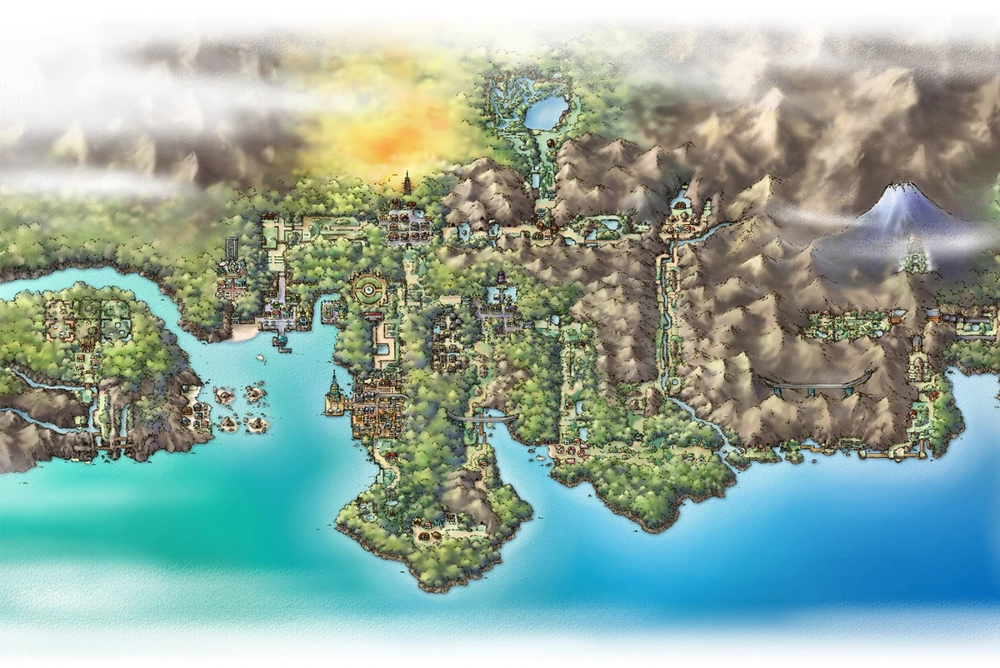
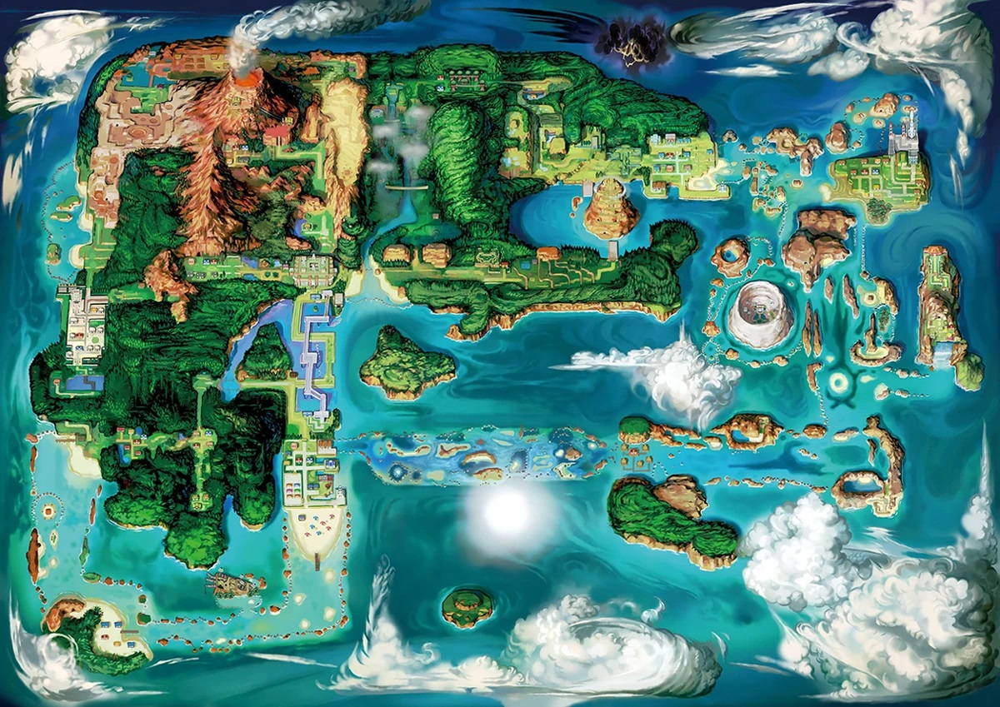
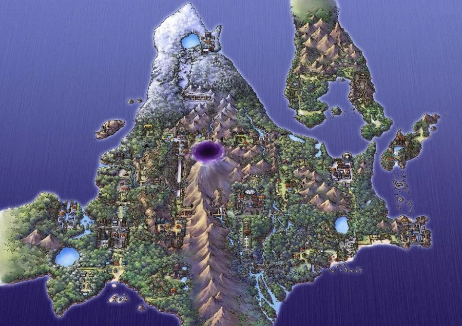
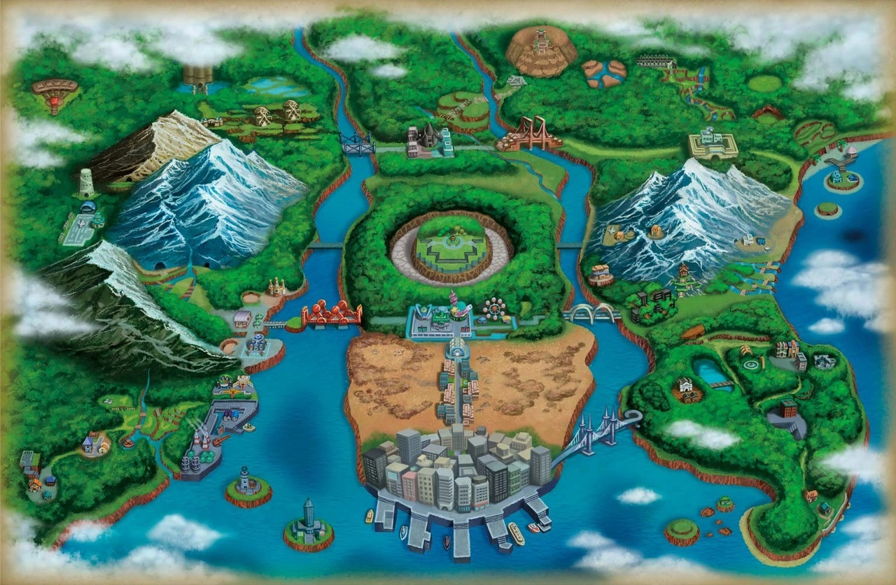
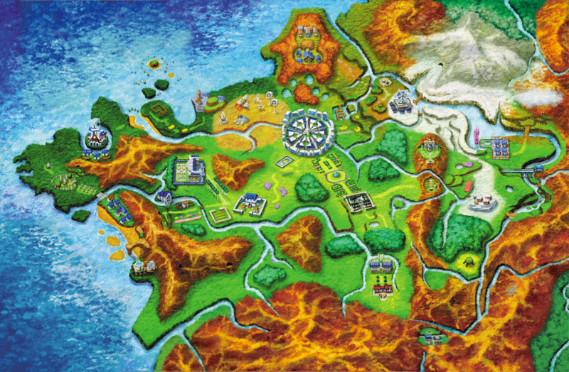
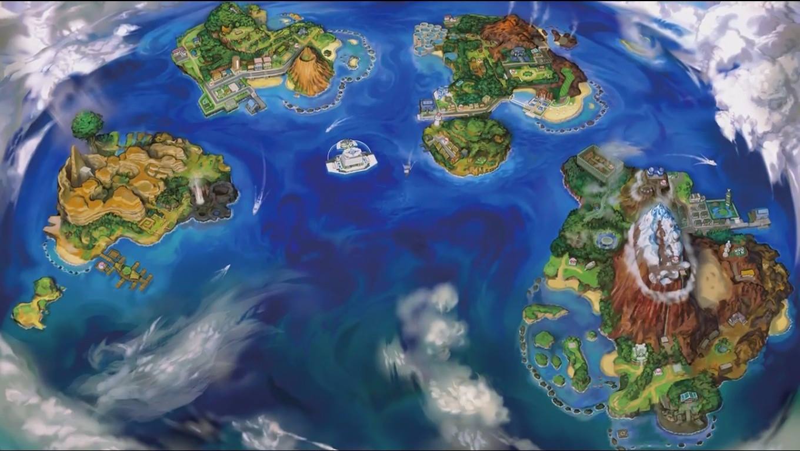
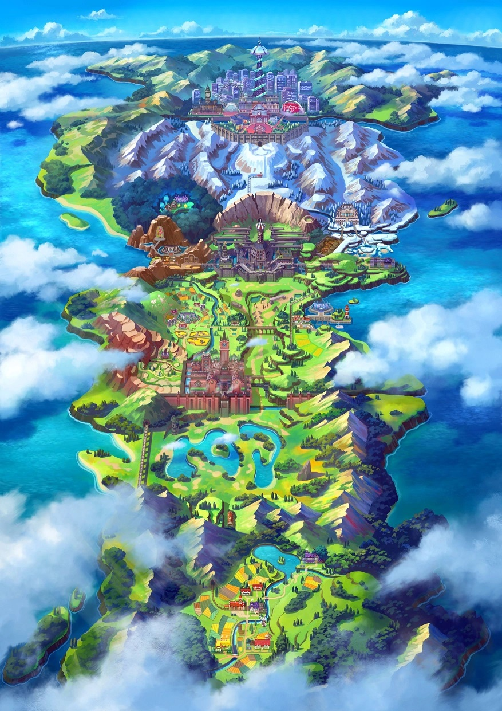
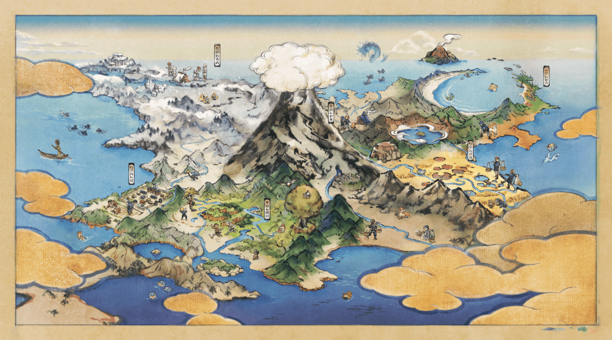
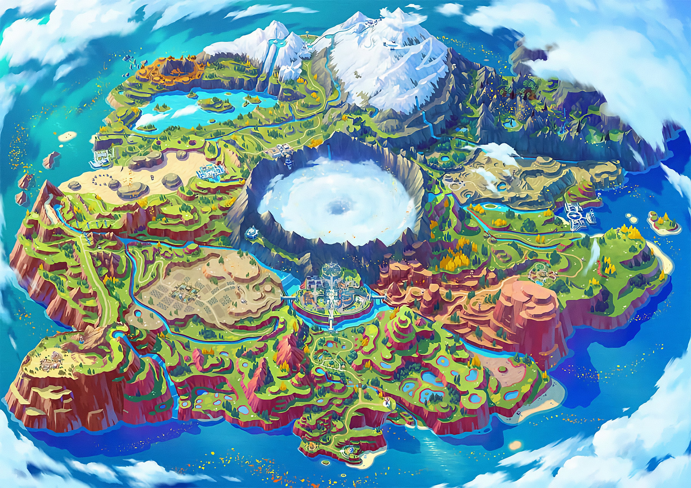

A Região de Kanto é a primeira região apresentada na série de jogos e é a região mais famosa da franquia, contando com os iniciais: Bulbasaur, Charmander e Squirtle; e os lendários: Zapdos, Moltres, Articuno e Mewtwo.
A Região de Johto é a psegunda região apresentada na série de jogos também famosa, porém nem tanto quanto Kanto, contando com os iniciais: Chicorita, Cyndaquil e Totodile; e os lendários: Raikou, Entei, Suicune, Lugia e Ho-oh.
A Região de Hoenn é a terceira região apresentada na série de jogos e é a região com os melhores pokémon, contando com os iniciais: Treecko, Torchic e Mudkip; e os lendários: Groudon, Kyogre, Rayquaza, Regirock, Regice, Registeel, Latios e Latias.
A Região de Sinnoh é a quarta região apresentada na série de jogos e é a região com uma das melhores histórias, contando com os iniciais: Turtwig, Chimchar e Piplup; e os lendários: Dialga, Palkia, Giratina Cresselia, Regigigas, Mesprit, Uxie e Azelf.
A Região de Unova é a quinta região apresentada na série de jogos e tem dos melhores jogos pokémon, contando com os iniciais: Snivy, Tepig e Oshawott; e os lendários: Reshiram, Zekrom, Kyurem, Cobalion, Virazion, Terrakion, Thundurus, Tornadus e Landorus.
A Região de Kalos é a sexta região apresentada na série de jogos e inovou os jogos pokémon com o 3D, contando com os iniciais: Chespin, Fenekin e Froakie; e os lendários: Yveltal, Xerneas e Zygarde.
A Região de Alola é a sétima região apresentada na série de jogos e foi onde apresentou as famosas ultrabeasts, contando com os iniciais: Rowlet, Litten e Popplio; e os lendários: Solgaleo, Lunala, Cosmog, Cosmoen Tapu-Koko, Tapu-Bulu, Tapu-Fini, Tapu-Lele, Type: Null e Silvally.
A Região de Galar é a oitava região apresentada na série de jogos e foi onde apresentou as formas Gigantamax, contando com os iniciais: Grookey, Scorbunny e Sobbie; e os lendários: Eternatus, Zacian, Zamazenta, Regidrago, Regieleki, Kubfu, Urshifu, Calirex, Spectrier, Glastrier, Zapdos de Galar, Articuno de Galar e Articuno de Galar.
A Região de Hisui é antiga região de Sinnoh apresentada na série de jogos e foi onde apresentou um mundo aberto com captura e estilo de batalhas diferentes, conta com os iniciais: Rowlet, Cyndaquil e Oshawott; e o lendário: Eternamorus.
A Região de Paldea é a nona região e última região apresentada na série de jogos até o momento, contando com os iniciais: Sprigatito, Fuecoco e Quaxly; e os lendários: Koraidon, Miraidon, Chi-Yu, Ting-Lu, Chien-Pao.
